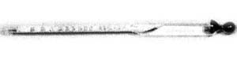

In order to properly determine the strength of your distilled alcohol, you'll need a quality hydrometer. Although a simple "burn" test does indicate that your mixture is over 100 proof, it's necessary to know precisely what percentage of alcohol, by volume, is contained in the final product ... especially when you plan to use the blend to run an engine or fuel a pump-fed furnace.
A hydrometer is simply a device that measures the specific gravity of a liquid ... in this case, ethanol. (Automotive-type hydrometers-used to test wet-cell batteries-are not suitable for determining alcohol percentages.) The instrument we relied on during our tests proved to be accurate and simple to use, and we made arrangements with the manufacturer to supply us with a large quantity ... since we figured other experimenters would want to have this necessary "tool". (Highproof alcohol hydrometers are difficult to obtain singly, and the type used by winemakers doesn't have the range necessary to test a nearly pure distillate.)
If you have a problem finding the right kind of hydrometer (or if you don't even want to try to locate one), we now have our six-inch, 0-200 proof instruments available. Just send in $4.95 (plus 50 cents shipping and handling) to THE Mother Earth News (restricted) , P.O. Box 70, Hendersonville, North Carolina 28739. And, if you also want the fermentation lock described elsewhere in this article, include another $1.50.
|
 STAFF PHOTOS |
|
|